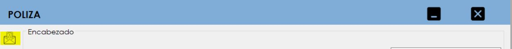
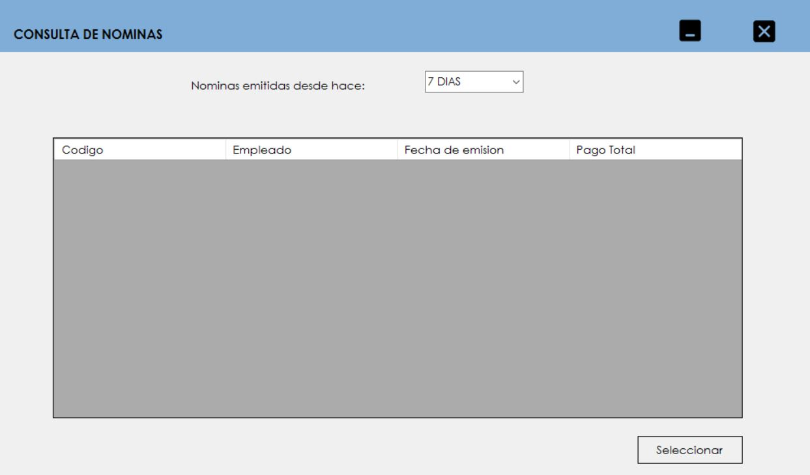
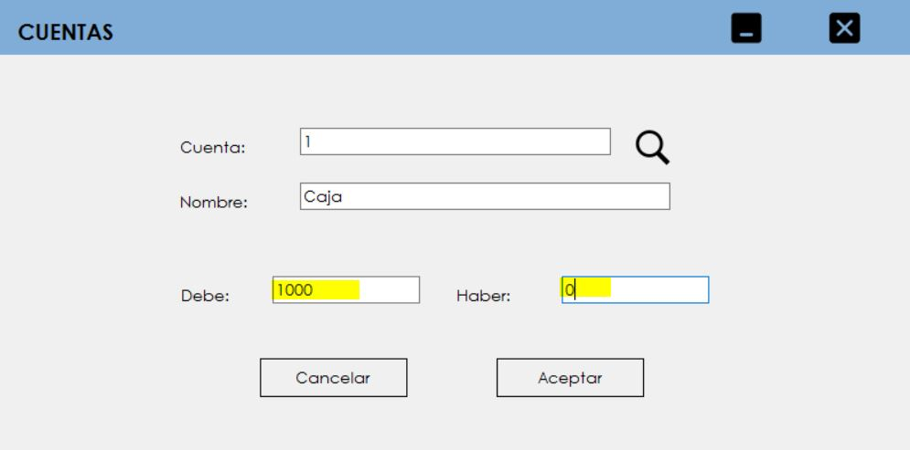
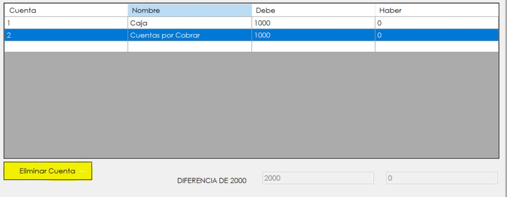
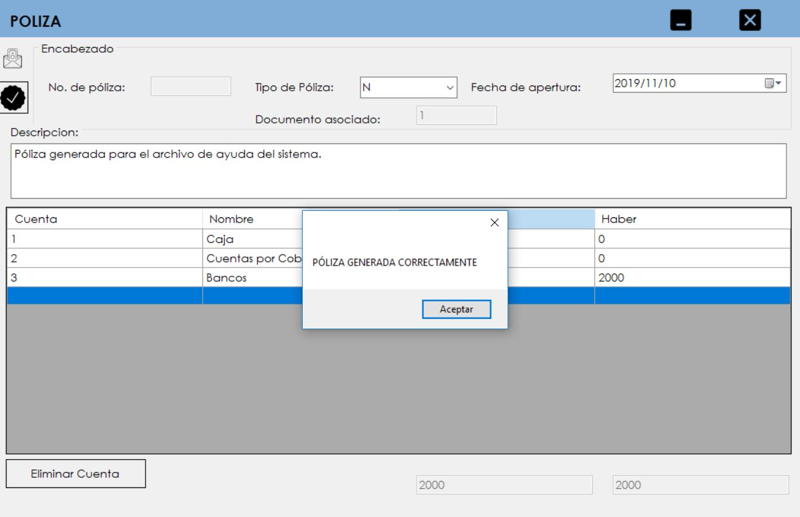

Uno de los primeros pasos para realizar la póliza deberá ser escoger la nomina a trasladar a contabilidad, para ello se tiene que pulsar el botón que está en el lado superior izquierdo del formulario que dice "Ver nominas".
Luego de presionar ese botón emergera un formulario para consultar las nominas vigentes.
Dependiendo de la opción que se escoga se mostrarán todas las nominas emitidas dependiendo de los días seleccionados como filtro de búsqueda.
Luego de escoger la nomina a trasladar se tiene que presionar el botón "Seleccionar" para enviar la nomina al formulario principal.
Es idéntico al proceso de escoger una nómina, solo que en este caso si se
quiere buscar una cuenta en específico se debe de digitar el nombre de la
cuenta para que aparescan las cuentas relacionadas con el nombre
ingresado.
Para acceder a este formulario de consulta se debe de dar doble click a
cualquier celda que se muestra en el formulario de póliza y dar click en
el botón de buscar para que aparesca el formulario.
Luego de escoger una cuenta se debe presionar el botón de "Seleccionar" para regresar al formulario anterior.
Dependiendo de la cuenta seleccionada se deberá de ingresar un valor del lado del "Debe" o el "Haber" en este formulario:
Luego de haber ingresado los datos se deberá de presionar el botón de "Seleccionar".
Si se seleccionó una cuenta erronea se tiene la posibilidad de eliminarla presionando el botón de "Eliminar Cuenta" que está en el formulario principal de la generación de la Póliza.
Ya realizando todos los pasos explicados anteriormente se debe de aseguridad que:
Luego de realizar todo este proceso se debe de presionar el botón del lado izquierdo superior para aceptar los cambios hechos y generar la poliza.
